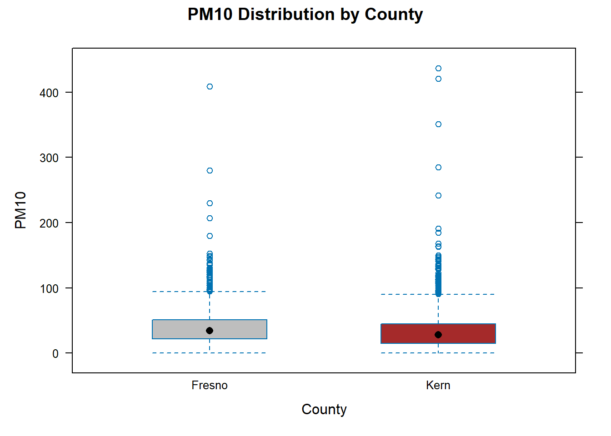
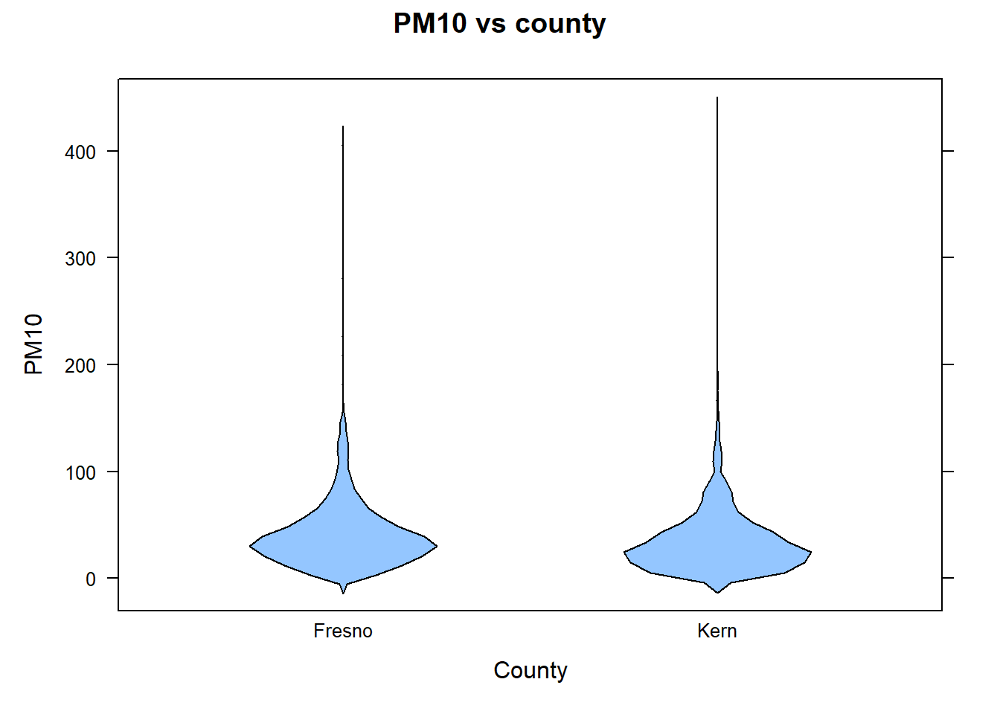
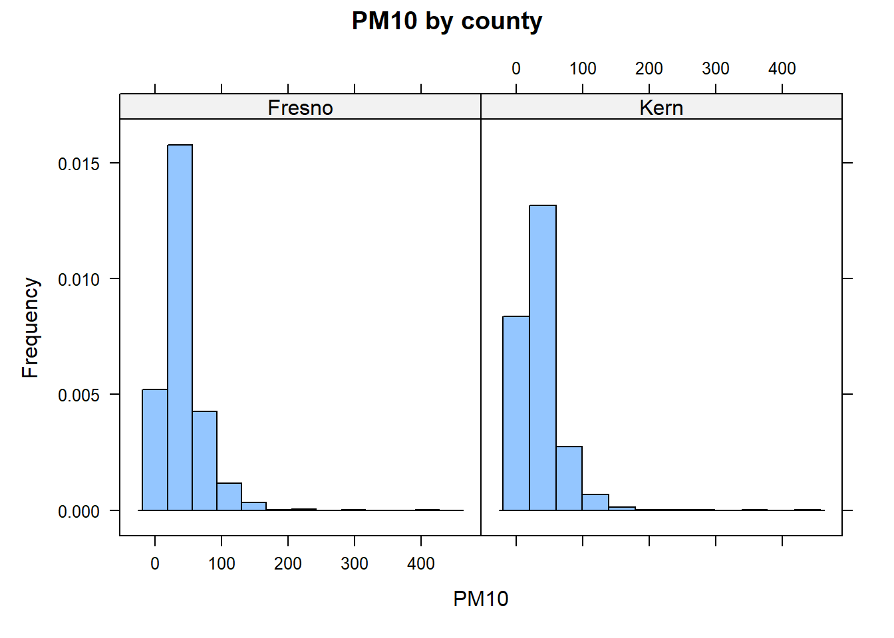

Figure 12.1: AI art generated by keywords “two-sample t-test”
Consider comparing independent populations in regard to the mean or median of some attribute, or two treatments by comparing the true mean or median response under each treatment in an experiment. In this section, the following hypothesis tests (HT) for such comparisons are illustrated:
t-based or t-test based for comparing two means
Wilcoxon rank sum test for comparing distributions or location shifts
Randomization test for comparing two means or two medians
For confidence intervals (CIs), an overview of the two-sample \(t\)-based CI for comparing means and Wilcoxon-based CI for comparing medians is provided. Equations/formulas used in HT or CIs will be kept at a minimum as the focus is on using software to carry out these methods. That being said, those new to or not comfortable with HT or CIs should consider reviewing Chapter 11. These methods will be illustrated using a case study.
For any statistical inferential method to provide meaningful results, several assumptions are made about the data on which the method is intended to be used.
WarningData assumptions
The methods discussed in this section require one or more of the following assumptions about the data.
Assumption 1. Observations must be independent within each sample and between the two samples. Shared conditions, repeated measurements, or pairing can violate this assumption.
Assumption 2. No clear outliers in either sample.
Assumption 3. Normality or large sample. The data for each sample should be roughly normally distributed. If the sample size is large enough, the normality assumption is not needed.
Assumption 4. Equal variance or spread. The variability in each sample should be about the same.
While these assumptions are assessed within the illustrations of the inferential methods using a case study, assumption 1 can be assessed based on study design, histograms and boxplots for assumption 2, quantile-quantile plots for normality component of assumption 3, and boxplots, histograms, and sample standard deviation for assumption 4.
In these sections, we use R functions to conduct the inferential methods described earlier and provide detailed explanations of their use. While other functions may be used for tasks such as importing data and summarizing data numerically or graphically, we do not discuss them in this section as they have been covered in a previous module.
ImportantNotation
To improve readability, we minimize the use of notation. However, when comparing two populations or treatments denoted by A and B, we use the following notation:
\(\mu_A\) and \(\mu_B\) denote the population or true mean response under A and B, respectively.
\(\bar{y}_A\) and \(\bar{y}_B\) denote the sample mean of the corresponding samples obtained from A and B.
\(\eta_A\) and \(\eta_B\) denote the population or true median response under A and B, respectively.
\(m_A\) and \(m_B\) denote the sample median of the corresponding samples obtained from A and B.
12.1 Two sample t-based methods for comparing two means
The independent two-sample t-test is a commonly used hypothesis test for comparing two groups or populations. There are two versions of this test: Student’s t-test and Welch’s t-test. Both tests can be used to compare whether the difference between the true averages (from two independent populations) is statistically significant or to determine if an effect (when comparing two treatments) is significant. This helps to determine if the difference or effect is due to chance or not. The t-based confidence interval for the difference in true averages provides a range of plausible values for the difference at a specified level of significance. These methods are generally referred to as t-based methods.
Student’s two-sample t-based methods assume assumptions 1, 2, 3, and 4 hold. The version of the t-based methods used here are called the Welch two-sample t-based methods, which do not require homogeneity of variances assumption. The Welch two-sample t-test statistic takes the following form:
\[T=\frac{(\bar{y}_{A}-\bar{y}_{B}) -\Delta_0}{\sqrt{\frac{s_{A}^2}{n_{A}}+\frac{s_{B}^2}{n_{B}}}},\] where \(n\) and \(s\) denote sample size and standard deviation, and \(\Delta_0\) is the mean difference specified by the null (zero here).
The data should consist of two variables of interest: a numerical variable that measures the outcome or response of interest and a factor or grouping variable with two levels. The grouping variable distinguishes the different populations or treatments (A or B). The hypothesis takes the form
Under \(H_0\), the null distribution of Welch’s T is approximated by a t-distribution with a certain degree of freedom1, and it is used to compute the p-value. The function two.mean.test()2 computes the test statistic and p-value for the two-sample t-test, as well as provide a confidence interval for \(\mu_A - \mu_B\).
TipR functions
### two.mean.test( y ~ x , data , first.level,
### direction, conf.level,
### welch)
# y: Replace y with the name of the response (measured)
# variable of interest.
# x: Replace x with the name of the factor or grouping
# variable that distinguishes the different populations
# or treatments.
# data: Set equal to the data frame name.
# first.level: Set equal to the level/category from the
# grouping variable. It determines how the difference
# in sample means is computed. It should be consistent
# with the formulation of the hypothesis.
# direction: Set equal to the sign in the alternative: "two.sided",
# "greater" , or "less".
# conf.level: Set equal to the confidence level for the CI (default is .95).
# The function will always provide a CI by default.
# welch: Set equal to TRUE (default) for Welch's t-test. Set
# to FALSE for Student's t-test.
Many of the R functions used in this resource will have identical arguments. Therefore, while the arguments will be provided for any functions used, common arguments such as data, direction, … will generally only be described once within a given module.
Note
We apply two-sample t-based methods (hypothesis testing and CI) to the data described in the case study provided in Chapter 3. The goal is to determine if there is a significant difference in PM10 concentration between Kern and Fresno counties and to estimate the difference between the true means.
The data provided in the case study consists of several variables (PM10, AQI, …, county, and City.Name). A subset of the data were created so that it included only PM10 (daily PM10 levels) and county (county in which the monitoring site is located) for the two counties of interest. To start, the data are imported and numerical and graphical summaries of the data would be created. However, graphical and numerical data summaries are covered in other modules. The focus here is to assess model assumptions either numerically or graphically.
# Import the data and save the data in a # data frame called 'KernFresnoPM10df'KernFresnoPM10df<-read.csv("datasets/KernFresnoDailyPM10.2021.csv")# Load the 'dplyr' package, which provides the 'mutate()' function.library(dplyr)# Tell R that 'county' should be treated as a factor variable by using mutate().KernFresnoPM10df<-mutate(KernFresnoPM10df, county=as.factor(county))# Print a summary of the data frame, including # variable names and other information.summary(KernFresnoPM10df)#> PM10 AQI temp Latitude #> Min. : 0.00 Min. : 0.0 Min. : 35.13 Min. :35.05 #> 1st Qu.: 18.00 1st Qu.: 17.0 1st Qu.: 54.04 1st Qu.:35.44 #> Median : 31.00 Median : 29.0 Median : 64.64 Median :35.64 #> Mean : 37.34 Mean : 32.1 Mean : 66.78 Mean :35.98 #> 3rd Qu.: 48.00 3rd Qu.: 44.0 3rd Qu.: 80.00 3rd Qu.:36.79 #> Max. :437.00 Max. :316.0 Max. :102.00 Max. :36.99 #> NAs :391 #> Longitude windspeed state county #> Min. :-119.8 Min. : 0.7708 Length :2773 Fresno:1046 #> 1st Qu.:-119.7 1st Qu.: 2.4333 N.unique : 1 Kern :1727 #> Median :-119.0 Median : 3.6500 N.blank : 0 #> Mean :-118.9 Mean : 4.4577 Min.nchar: 10 #> 3rd Qu.:-118.1 3rd Qu.: 5.2583 Max.nchar: 10 #> Max. :-117.7 Max. :22.4625 #> #> City.Name #> Length :2773 #> N.unique : 7 #> N.blank : 0 #> Min.nchar: 6 #> Max.nchar: 13 #> #> # Load the 'lattice' package, which provides the 'bwplot()' function.library(lattice)# Create a box plot of Air Quality Index (AQI) by county levels using the 'bwplot()' functionbwplot(PM10~county, # y ~ x data =KernFresnoPM10df, # set the data frame to use xlab ="County", # set the x-axis label ylab ="PM10", # set the y-axis label main ="PM10 Distribution by County", # set the plot title fill =c("gray", "brown"))# fill the boxes with specified colors

Code
# Load the 'mosaic' package, which allows using # formula expressions in 'mean()' and 'sd()'library(mosaic)# Compute the sample mean for each countymean(PM10~county , data=KernFresnoPM10df)#> Fresno Kern #> 41.09943 35.06717# Compute the sample standard deviation for each countysd(PM10~county , data=KernFresnoPM10df)#> Fresno Kern #> 31.88051 32.26383
The difference in samples means between Kern and Fresno county is
\[35.067-41.099=\bar{x}_K-\bar{x}_F=-6.032.\]
The estimated mean difference is -6.032 PM10 units. The following CI and test illustrate an independent-observation model. Independence requires assessment: daily measurements can be correlated over time and across counties through shared weather. Different county labels do not establish independence. Large sample sizes do not repair dependence, and broader population inference requires a suitable sampling or statistical model3.
Graphical summaries show spread and unusual values in each county. The sample standard deviations should be computed for PM10, as in the code above, rather than for AQI. A ratio of standard deviations is at most a rough guide to comparable spread; it does not establish independence or guarantee validity.
Independence remains unverified, and neither rank tests nor arbitrary shuffling resolve dependence. For but for illustration we analyze the data using the two-sample t-based methods. Let \(\mu_K\) denote the true mean PM10 levels in Kern county. \(\mu_F\) is defined analogously for Fresno county. Since an aim is to determine if there is significant difference between PM10 levels in Kern and Fresno county, the hypothesis is
pm10_fit<-t.test(KernFresnoPM10df$PM10[KernFresnoPM10df$county=="Kern"],KernFresnoPM10df$PM10[KernFresnoPM10df$county=="Fresno"], conf.level=.99)# Source the function two.mean.test() so that it's R's memory.source("rfuns/two.mean.test.R")# Recall that the data were imported and stored in "KernFresnoPM10df"# The function will require the following information:# y: Replace with 'PM10'# x: Replace with 'county'# data: Set equal to a 'KernFresnoPM10df'# first.level: The county that appears first in the hypothesis# (Kern county), so set equal to "Kern"# direction: It is a two-sided alternative, so set equal to "two.sided"# conf.level: Set equal .99 since we seek a 99% CI# welch: The Welch t-test is the default method here, so using # the default value (TRUE)two.mean.test(PM10~county , # y ~ x data =KernFresnoPM10df ,# specify the data frame to use first.level ="Kern" , # specify the first level in the hypothesis direction ="two.sided" ,# specify a two-sided alternative conf.level =.99)# set the confidence level to .99#> Theoretical-based two-sample test for independent samples #> #> formula: PM10 ~ county #> sample mean of Kern group: 35.06717 #> sample mean of Fresno group: 41.09943 #> sample sd of Kern group: 32.26383 #> sample sd of Fresno group: 31.88051 #> #> difference between groups: ( Kern group ) - ( Fresno group ) #> obs t-test statistic: -4.807498 p-value = 1.63e-06 #> df= 2225.184 #> direction: two.sided #> #> Confidence level: 0.99 #> CI:( -9.267081 , -2.797435 )
The output includes the following information:
The sample mean and standard deviation under each level of the grouping/factor variable.
The value of the observed statistic: \(T=-4.8075\)
p-value
A confidence interval
The nominal Welch statistic is \(T=-4.8075\), with p approximately \(1.63\times10^{-6}\). It rejects a zero mean difference at \(\alpha=.01\) under the independent-observation model. Dependence among daily readings can affect this calculation, so the result does not establish a validated county effect.
The nominal 99% CI for Kern minus Fresno mean PM10 is (-9.267, -2.797). Its negative bounds indicate a higher estimated mean at the Fresno sites under the model. These uncertainty estimates require independent observations; temporal dependence and site selection limit inference.
12.2 Wilcoxon-based methods for comparing locations
Outliers or departures from normality do not automatically invalidate t-based methods; their importance depends on sample size, severity, and robustness. Rank-based methods use ordering and are less sensitive to extreme magnitudes, but are not unaffected by unusual observations. Wilcoxon methods require independent observations and a suitable null distribution4. A common-shape shift model supports interpreting them as median comparisons. There is no universal minimum of ten observations for an exact rank test5.
The Wilcoxon rank sum (Mann–Whitney) test compares ranks between two independent samples. Under a common-shape location-shift model, it tests a zero location shift, equivalent to equal population medians. With different shapes, rejection can reflect other distributional differences.
The test statistic for the Wilcoxon rank sum test depends on the ranks of the observed data, and its value will be provided by software. However, some details regarding the computation of the test statistic are provided below:
List the observations for both samples from smallest to largest across both groups.
Assign the numbers \(1\) to \(n_A+n_B=N\) to the observations (across both groups) with 1 assigned to the smallest observations and \(N\) to the largest observation. These are called ranks of the observations.
If there are ties (due to repeated values) in the combined data set, the ranks for the observations in a tie are taken to be the average of the ranks for those observations.
Let \(W\) denote the sum of the ranks for the observations from group A.
The test statistic then takes the form
\[U=W-\frac{n_A(n_A+1)}{2}\] Whereas the null hypothesis of the two-sample t test is equal means, under the common-shape shift model the Wilcoxon null6 can be expressed as equal medians:
Under \(H_0\), the null distribution of U is called the Wilcoxon distribution and it is used to compute the p-value7. The function two.wilcox.test()8 computes the test statistic and p-value9, as well as a CI.
The CI estimates the location shift using the median of pairwise differences between the groups10. It is not an interval for an individual future pair, nor generally the difference of sample medians. A common-shape shift model, without requiring symmetry, supports the difference-in-population-medians interpretation.
TipR functions
### two.wilcox.test( y ~ x , data , first.level,
### direction, conf.level)
# y: Replace y with the name of the response (measured)
# variable of interest
# x: Replace x with the name of the factor or grouping
# variable that distinguishes the different populations
# or treatments
# data: Set equal to the data frame being used.
# first.level: Set equal to a level/category from the grouping
# variable. It determines how the difference in
# sample means is computed. It should be consistent
# with the formulation of the hypothesis.
# direction: Set equal to the sign in the alternative: "two.sided",
# "greater" , or "less"
# conf.level: Set equal to the confidence level for the CI (default
# is .95). The function will always provide a CI by default.
Note
The PM10 example illustrates a Wilcoxon location comparison and CI. Repeated daily observations leave independence unverified. Rank methods do not fix that dependence. Violin plots help examine whether a common-shape shift interpretation is plausible, but cannot establish it.
library(lattice)# Provides the bwplot() function# Create a violin plot bwplot(PM10~county , data=KernFresnoPM10df , xlab="County" , ylab="PM10" , main="PM10 vs county" , panel=panel.violin)# set equal to panel.violin to create violin plot

The violin boxplot makes it clearer that the distribution of PM10 in both counties approximately have the same shape.
Let \(\eta_K\) denote the true median PM10 levels in Kern county. \(\eta_F\) is defined analogously for Fresno county. Since an aim is to determine if there is significant difference between PM10 levels in Kern and Fresno county, the hypothesis is
# Source the function two.wilcox.test() so that it's R's memory.source("rfuns/two.wilcox.test.R")# The function will require the following information:# y: Replace with 'PM10'# x: Replace with 'county'# data: Set equal to a 'KernFresnoPM10df'# first.level: The county that appears first in the hypothesis# (Kern county), set equal to "Kern"# direction: It is a two-sided alternative, so set equal to "two.sided"two.wilcox.test(PM10~county , # y ~ x data =KernFresnoPM10df , # Specify the data frame to use first.level ="Kern" , # Specify the first level in the hypothesis direction ="two.sided" , # Specify a two-sided alternative conf.level =.99)# Set the confidence level to .99#> Theoretical-based two-sample test for independent samples #> #> formula: PM10 ~ county #> sample median of Kern group: 28 #> sample median of Fresno group: 34 #> sample IQR of Kern group: 30 #> sample IQR of Fresno group: 29 #> #> method: Wilcoxon rank sum test with continuity correction #> difference between groups: ( Kern group ) - ( Fresno group ) #> obs test statistic: U= 759219.5 p-value = 1.821e-12 #> obs standardized test statistic: Z= -7.048 #> direction: two.sided #> #> difference in location (pseudomedian): -6.000007 #> confidence level: 0.99 #> CI:( -8.000049 , -3.999966 )
The output includes the following information:
The sample median and IQR under each level of the grouping/factor variable.
The value of the observed statistic
p-value
A confidence interval
Based on the output, the observed value of the test statistic is \(U=759219.5\). The p-value is small and positive; use the unrounded R result rather than reporting a rounded zero. Since p-value\(\leq\alpha=.01\), we have significant evidence to reject \(H_0\). Therefore, we have strong evidence that there is significant difference between PM10 levels in Kern and Fresno county at the designated monitoring sites.
The nominal 99% CI for the location shift is (-8.000, -4.000), estimated from between-group pairwise differences. Under a common-shape shift model this describes the population-median difference, not the difference between two future readings. Dependence among daily records could change uncertainty, so this is an illustration conditional on independent-observation assumptions.
12.3 A randomization test using a t-test test statistic
Randomization tests compare the observed statistic with its distribution under a null and the study’s actual assignment mechanism. For observational data, a permutation test instead needs a defensible exchangeability argument. Equality of means or medians alone does not imply that all label permutations are valid.
Randomization tests require assumptions. Under a sharp null of no individual treatment effect, reassign treatments according to the actual randomization design. For observational comparisons, unrestricted shuffling requires exchangeability under the null. A studentized statistic can support asymptotic validity under additional conditions, but does not justify arbitrary shuffling. Small samples also limit attainable p-values and power.
Comparing means
Here the statistic is Welch’s studentized difference in means. The shuffling is valid only under the design or exchangeability conditions just described. Extreme observations can affect this statistic; a categorical “no outliers” rule is not by itself a justification for the test.
TipR functions
### two.mean.test( y ~ x , data , first.level,
### direction, randtest,
### nshuffles)
# randtest: Set equal to TRUE to obtain the test statistic and p-value
# for the randomization test (for comparing means).
# nshuffles: Set equal to the desired number of randomizations.
Note
This example illustrates label shuffling for a difference in county means. Outliers alone do not determine its validity. Exchangeability of daily county records is unverified, so the result is a teaching calculation rather than a validated test of a county effect. Let \(\delta_\mu=\mu_K-\mu_F\). The hypotheses are:
The following code uses two.mean.test() to compute the test statistic and the corresponding p-value for a randomization test involving a difference in means.
# Data was imported earlier in the section # and 'mutate' converted 'county' into a factor variable.# Source the function two.mean.test() so that it's R's memory.source("rfuns/two.mean.test.R")# The function will require the following information:# y: Replace with 'PM10'# x: Replace with 'county'# data: Set equal to a 'KernFresnoPM10df'# first.level: In the hypothesis, Kern county appeared first in the# difference, so set equal to "Kern"# direction: It is a two-sided alternative, so set equal to "two.sided"# randtest: Set equal to TRUE. # nshuffles: Set equal to 30,000 two.mean.test(PM10~county , # specify the variables for the test data =KernFresnoPM10df , # specify the data frame to use first.level ="Kern" , # specify the first level in the hypothesis direction ="two.sided" , # specify a two-sided alternative randtest =TRUE , # perform a simulation-based test nshuffles =30000)# set the number of randomizations to 30,000
The output reports summaries, the observed studentized difference, and a Monte Carlo p-value. This wrapper does not construct a randomization CI; the estimated difference still describes effect size. The shuffling exercise does not address the dependence concerns in these daily records.
Comparing medians
Here the shuffled statistic is the Wilcoxon rank statistic, not the sample-median difference. Under an exchangeable common-shape shift model it can support a median/location comparison; unequal shapes can change that interpretation.
TipR functions
### two.wilcox.test( y ~ x , data , first.level,
### direction, conf.level)
### randtest, nshuffles)
# randtest: Set equal to TRUE to obtain the test statistic and p-value
# for the randomization test (for comparing medians).
# nshuffles: Set equal to the desired number of randomizations.
Note
The following shuffling exercise illustrates a permutation calculation with tied PM10 observations. Ties alone do not make this more accurate than a tie-adjusted normal approximation. Unrestricted county-label shuffling requires exchangeability, which shared weather and serial dependence may violate. It does not validate the earlier inferential conclusions.
Code
# Data was imported earlier in the section # and 'mutate' converted 'county' into a factor variable.# Load the 'lattice' packagelibrary(lattice)# provides the histogram() functionhistogram(~PM10|county , # ~ "variable" | "grouping factor" data =KernFresnoPM10df , # Specify the data frame to use xlab ="PM10" , # Label the x-axis ylab ="Frequency" , # Label the y-axis main ="PM10 by county")# Add a title to the plot

To determine if there is significant county effect on PM10 levels when comparing Kern and Fresno county, let \(\delta_\eta=\eta_K - \eta_F\). The hypotheses are
The following code uses two.wilcox.test() to compute the test statistic and the corresponding p-value for a randomization test involving a difference in medians
# Data was imported earlier in the section # and 'mutate' converted 'county' into a factor variable.# Source the function two.wilcox.test() so that it's R's memory.source("rfuns/two.wilcox.test.R")# The function will require the following information:# y: replace with 'PM10'# x: replace with 'county'# data: set equal to a 'KernFresnoPM10df'# first.level: In the hypothesis, Kern county appeared first in the# difference, so set equal to "Kern"# direction: It is a two-sided alternative, so set equal to "two.sided"# randtest: Set equal to TRUE. # nshuffles: Set equal to 30,000 two.wilcox.test(PM10~county , # Specify the variables for the test data =KernFresnoPM10df , # Specify the data frame to use first.level ="Kern" , # Specify the first level in the hypothesis direction ="two.sided" , # Specify a two-sided alternative randtest =TRUE , # Perform a simulation-based test nshuffles =30000)# Set the number of randomizations to 30,000
The output reports summaries, the observed rank statistic, and a Monte Carlo p-value. This wrapper does not construct a randomization CI. Its validity still requires the exchangeability conditions discussed above.
12.4 Sample size estimation and power analysis
Ideally, estimating sample size for a study is one of the first steps that researchers take prior to collecting data. Knowing the sample size required to detect a desired effect at the beginning of a project allows one to manage their data collection efforts. Further, this allows for one to determine how much statistical power the test will have to detect an effect.
The R function pwr.t2n.test() from the pwr R package can be used to calculate statistical power for a two sample t-test when the sample sizes, significance level (\(\alpha\)), and effect size are provided. The function pwr.t.test from the same package will provide the sample sizes required for a given power level, significance level (\(\alpha\)), and effect size. Note that variability in each sample is assumed to be about the same. It is assumed the appropriate assumptions about the data are met11.
TipR functions
### power.t2n.test( n1 , n2 , d , sig.level ,
### power, alternative)
# n1: Set equal to the number of observations in first sample.
# n2: Set equal to the effect size.
# d: Set equal to the effect size.
# sig.level: Set equal to the desired alpha value (significance level)
# power: Set equal to the desired power (a number between 0 and 1).
# alternative: The direction of the alternative. Set equal to "two.sided".
#
#
### power.t.test(power, d , sig.level ,
### alternative , type)
# power: Set equal to the desired power.
# type: Set equal to "two.sample" .
#
The effect size refers to Cohen’s \(d\), which is defined as the difference between the true means divided by the pooled standard deviation. Cohen’s \(d\) is typically interpreted as follows:
Small effect size: \(d = 0.20\)
Medium effect size: \(d = 0.50\)
Large effect size: \(d = 0.80\) or higher.
These are suggested guidelines and may vary slightly depending on the specific field of research or context of the study.
Note
Refer to the data described in the case study provided in Chapter 3. Let’s suppose the goal is to determine the statistical power of a two sample t-test if one wanted to detect a medium-sized effect when the sample size from each county is 100 at \(\alpha=.01\).
Code
library(pwr)# provides pwr.t2n.test# Note: The output of this function call will be the statistical power for the t-test.pwr.t2n.test(n1 =100 , # Set the sample size for group 1 n2 =100 , # Set the sample size for group 2 d =0.50 , # Set Cohen's d sig.level =0.01 , # Set the significance level for the test alternative ="two.sided")# Specify a two-sided alternative hypothesis#> #> t test power calculation #> #> n1 = 100#> n2 = 100#> d = 0.5#> sig.level = 0.01#> power = 0.8238225#> alternative = two.sided
The statistical power of this test is \(.824\). To further increase the power, one may increase the effect size (the larger it is, the easier it is to detect), increase the value of \(\alpha\) (make it easier to reject \(H_0\) and find a significant effect), and/or increase the sample sizes. The sample data consisted of at least 1000 observations from each county, so set each sample to \(1000\):
Code
pwr.t2n.test(n1 =1000 , n2 =1000 , d =.50 , sig.level =0.01 , alternative ="two.sided")#> #> t test power calculation #> #> n1 = 1000#> n2 = 1000#> d = 0.5#> sig.level = 0.01#> power = 1#> alternative = two.sided
If instead you seek the required sample size for a given power, the argument power could be set to the desired power in the function pwr.t.test():
Code
# Note: The output of this function call will be the required sample size for the t-test.pwr.t.test(power =0.90 , # Set the desired power level d =0.50 , # Set the standardized mean difference between groups sig.level =0.01 , # Set the significance level for the test type ="two.sample" , # Set a two-sample t-test alternative ="two.sided")# Specify a two-sided alternative hypothesis#> #> Two-sample t test power calculation #> #> n = 120.7055#> d = 0.5#> sig.level = 0.01#> power = 0.9#> alternative = two.sided#> #> NOTE: n is number in *each* group
Relative power depends on the distributions, the effect, and the chosen tests. Rank tests can outperform t-tests for some non-normal distributions. Select methods using the scientific question, study design, target parameter, and relevant assumptions.
For the Welch t-test, the degree of freedom can be tedious to compute. Software will provide the corresponding degrees of freedom and p-value.↩︎
For a two-sample t-test, two.mean.test() is a wrapper function of the R function t.test, but two.mean.test allows the user to choose the order of the difference.↩︎
Randomization inference also requires an actual assignment mechanism or a defensible exchangeability argument; arbitrary shuffling of daily county observations is not automatically valid.↩︎
Known distributions are parametric distributions in that they can be expressed using math formulas. Parametric methods assume that the underlying population data follow a known distribution↩︎
Non-parametric methods assume fewer things about the data compare to parametric methods.↩︎
With unequal distribution shapes, equal medians alone do not supply the usual rank-test null distribution. Do not automatically reinterpret this as a test of a zero pseudomedian.↩︎
The exact rank distribution is discrete; software can use an exact calculation or a normal approximation with tie adjustments, depending on sample size, ties, and its implementation.↩︎
The R function two.wilcox.test is a wrapper function for the R function wilcox.test().↩︎
When an asymptotic calculation is used, the p-value uses a normal approximation, generally with tie and continuity corrections. Assess approximation quality for the particular data rather than relying on a universal sample-size cutoff.↩︎
The two-sample Hodges–Lehmann estimate is the median of all between-group pairwise differences. It estimates the location shift under a shift model.↩︎
The R function power.welch.t.test() and sim.ssize.wilcox.test() from the MKpower R package provides statistical power calculations for the two-sample Welch t-test and two-sample Wilcox rank sum test, respectively. However, these functions may be difficult to use for those not familiar with power analysis.↩︎